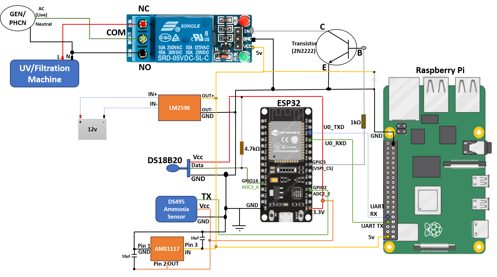

🖥️ Central processing
- Raspberry Pi 4 — Runs the dashboard and ML models.
- ESP32 microcontroller — Sensor acquisition and preprocessing.
- Modbus TCP/IP — Network communication between units.
Technical implementation of an IoT-enabled aquaculture monitoring system that integrates sensor networks, control automation, and data-driven decision-making.

This study integrates hardware design, machine learning, and energy optimization to deliver an intelligent aquaculture monitoring system.
96.5% accuracy
RBF kernel for non-linear relationships.
95.2% accuracy
High interpretability with Gini impurity.
97.1% accuracy
Optimal model with 0.955 F1-score.
Training data: 7,556 water quality measurements (80/20 train–test split).
Energy calculation: E = P × D × t
100% duty cycle = 10.0 kWh/day
50% duty cycle = 5.1 kWh/day (49% reduction)
30% pump + 50% UV duty = 3.3 kWh/day (67% reduction)
Digital kWh meter logging across operational scenarios.
Flowmeter readings and float switch responsiveness testing.
Pre/post-filtration sampling and multiparameter analysis.
End-to-end latency < 2 seconds; dashboard refresh < 1 second.